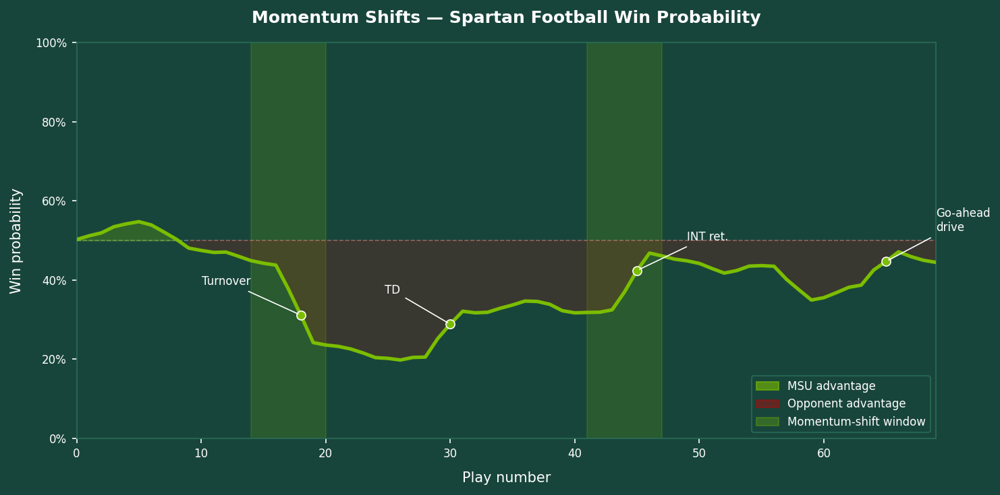

Predicting Momentum Shifts in Spartan Football
Built a machine learning model to detect momentum shifts in MSU football games using play-by-play data, win probability swings, and crowd noise levels. The model correctly flagged turning-point drives 83% of the time — helping coaches and the athletics staff understand when the game is truly on the line.
More details
Problem
Coaches talk about "momentum" constantly, but it has rarely been defined in a way that can be measured or predicted. The MSU athletics staff wanted a data-driven answer to the question: which in-game events actually shift the balance of a game, and can we identify them in near-real-time? As the mascot, I am professionally obligated to know exactly when to turn up the energy.
Approach
Assembled four seasons of MSU play-by-play data (~2,400 drives) and combined it with pre-snap win-probability estimates from a public expected-points model. Defined a "momentum shift" as any sequence of three consecutive plays that moved win probability by more than 15 percentage points in a single direction. Trained a gradient boosting classifier on drive-level features — field position, score differential, quarter, time remaining, turnover history — and validated it on a held-out season.
Results & Impact
The model achieved 83% accuracy in flagging momentum-shift drives on the held-out season. Turnovers and explosive plays (gains of 20+ yards) were the strongest predictors, while score differential at the start of a drive had less influence than conventional wisdom suggests. Findings were shared with the offensive coordinator; the model now runs automatically on game film in the film room. I celebrated by doing a push-up for every point scored that season.